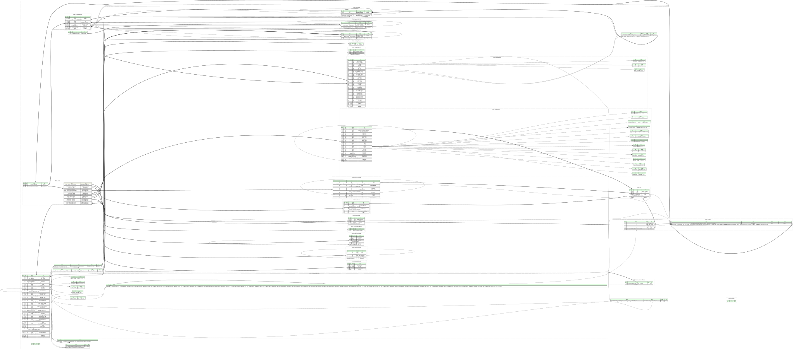

UBIFS is a file system for raw flash memory devices. It works on top of UBI (Unsorted Block Images), which works as an abstraction layer so UBIFS does not need to care about low level details. This specification only covers UBIFS, not UBI.
A UBIFS image is divided into several Logical Erase Blocks (LEB). The first LEB (LEB0) contains the superblock node, which includes information about LEB size, amongst others. The next two LEBs (LEB1 and LEB2) comprise the so called "master area" and both contain a copy of the master node, which includes information about where to find the root index node, which is then used to access all the files on the file system.
Limitations of this Kaitai Struct implementation:
mkfs.ubifs (such as those in
firmware images built by OpenWrt), not file systems modified after
creation, e.g. by writing files to them on a running Linux system. The
Linux kernel appends a new copy of the master node to LEB1 and LEB2
whenever it mounts the file system read-write, unmounts it, or commits
changes (updates the index on flash to include them). When mounting, Linux
uses the
last copy,
whereas this implementation reads the first one (master_1), which still
describes the file system as it was created. Changes made since then are
therefore not visible via index_root.index_root either. Until they are committed,
UBIFS keeps them only in the journal. This only matters for file systems
that were not unmounted cleanly, because unmounting
commits
all changes.len_image. For the same reason,
parsing doesn't fail if the image is truncated. To detect that, check
that the stream is at least len_image bytes long
(_io.size >= len_image).This page hosts a formal specification of UBIFS using Kaitai Struct. This specification can be automatically translated into a variety of programming languages to get a parsing library.

meta:
id: ubifs
title: UBIFS
xref:
justsolve: UBIFS
wikidata: Q1018125
tags:
- filesystem
- linux
license: GPL-2.0-only
ks-version: '0.11'
encoding: UTF-8
endian: le
bit-endian: le
doc: |
UBIFS is a file system for raw flash memory devices. It works on top of
UBI (Unsorted Block Images), which works as an abstraction layer so UBIFS
does not need to care about low level details. This specification only covers
UBIFS, not UBI.
A UBIFS image is divided into several Logical Erase Blocks (LEB). The first
LEB (LEB0) contains the superblock node, which includes information about LEB
size, amongst others. The next two LEBs (LEB1 and LEB2) comprise the so called
"master area" and both contain a copy of the master node, which includes
information about where to find the root index node, which is then used to
access all the files on the file system.
**Limitations of this Kaitai Struct implementation:**
1. It only supports UBIFS images created by `mkfs.ubifs` (such as those in
firmware images built by OpenWrt), not file systems modified after
creation, e.g. by writing files to them on a running Linux system. The
Linux kernel appends a new copy of the master node to LEB1 and LEB2
whenever it mounts the file system read-write, unmounts it, or commits
changes (updates the index on flash to include them). When mounting, Linux
uses the
[last copy](https://github.com/torvalds/linux/blob/8d3ae59288f1e7d58d76558a6ee96d533bc5019f/fs/ubifs/master.c#L84-L165),
whereas this implementation reads the first one (`master_1`), which still
describes the file system as it was created. Changes made since then are
therefore not visible via `index_root`.
2. Changes that have not been committed yet are not in the index at all, so
they are not visible via `index_root` either. Until they are committed,
UBIFS keeps them only in the journal. This only matters for file systems
that were not unmounted cleanly, because unmounting
[commits](https://github.com/torvalds/linux/blob/8d3ae59288f1e7d58d76558a6ee96d533bc5019f/fs/ubifs/super.c#L486-L493)
all changes.
3. Parsing doesn't advance the stream position. This implementation reads
the image only through instances, so that parsing doesn't copy the
whole image into memory. To find where the image ends, e.g. when
carving it out of a larger file, use `len_image`. For the same reason,
parsing doesn't fail if the image is truncated. To detect that, check
that the stream is at least `len_image` bytes long
(`_io.size >= len_image`).
doc-ref:
- https://github.com/torvalds/linux/blob/8d3ae59288f1e7d58d76558a6ee96d533bc5019f/fs/ubifs/ubifs-media.h Git tag "v7.2"
- https://github.com/torvalds/linux/blob/8d3ae59288f1e7d58d76558a6ee96d533bc5019f/fs/ubifs/key.h Git tag "v7.2"
- http://www.linux-mtd.infradead.org/doc/ubifs.pdf
# some instances to access important data structures directly
instances:
superblock:
pos: 0
type: superblock_node
doc: |
The superblock node will always be at the start of
the first LEB.
master_1:
pos: superblock.node_header.leb_size
size: superblock.node_header.leb_size
type: masterblock_node
doc: |
The first copy of the master node in LEB1. This Kaitai Struct
implementation uses it to locate `index_root`. In an image created by
`mkfs.ubifs`, it is the only copy in LEB1.
doc-ref: https://github.com/sigma-star/mtd-utils/blob/053ee1038e5dedae61a88cadfb7bdfe9894d8bb6/ubifs-utils/mkfs.ubifs/mkfs.ubifs.c#L2627-L2633 Git tag "v2.3.1"
master_2:
pos: superblock.node_header.leb_size * 2
size: superblock.node_header.leb_size
type: masterblock_node
doc: |
The first copy of the master node in LEB2. In an image created by
`mkfs.ubifs`, it is the same as `master_1` except for the sequence
number and CRC in the common header. Linux keeps the master node in both
LEB1 and LEB2 for redundancy, and when mounting, it checks that the
copies in both match.
doc-ref:
- https://github.com/sigma-star/mtd-utils/blob/053ee1038e5dedae61a88cadfb7bdfe9894d8bb6/ubifs-utils/mkfs.ubifs/mkfs.ubifs.c#L2627-L2633 Git tag "v2.3.1"
- https://github.com/torvalds/linux/blob/8d3ae59288f1e7d58d76558a6ee96d533bc5019f/fs/ubifs/master.c#L115-L130 Git tag "v7.2"
index:
pos: superblock.node_header.leb_size * master_1.node_header.leb_root
size: superblock.node_header.leb_size
type: dummy
doc: |
The LEB containing the root index node, as given by `leb_root` in
`master_1`.
This instance only provides the substream for `index_root`, which can then
use `ofs_root` (an offset within the LEB) as its `pos` directly.
index_root:
io: index._io
pos: master_1.node_header.ofs_root
type: index_block
valid:
# Linux (v7.2) [loads](https://github.com/torvalds/linux/blob/8d3ae59288f1e7d58d76558a6ee96d533bc5019f/fs/ubifs/tnc.c#L1216-L1218)
# the root index node like any other index node, with
# [`read_znode()`](https://github.com/torvalds/linux/blob/8d3ae59288f1e7d58d76558a6ee96d533bc5019f/fs/ubifs/tnc_misc.c#L290-L300).
# The expected length is
# [taken from](https://github.com/torvalds/linux/blob/8d3ae59288f1e7d58d76558a6ee96d533bc5019f/fs/ubifs/master.c#L360)
# `<master_header>.len_root`, so Linux rejects any other length.
expr: _.header.len_full_node == master_1.node_header.len_root
doc: |
The root index node, in the `index` LEB at the offset given by
`ofs_root` in `master_1`. All other index nodes, and through them all
the files, are reached from it by recursively following the `target` of
each of the `branches`.
len_image:
value: superblock.node_header.leb_size * superblock.node_header.num_lebs
doc: |
Length of the file system image in bytes:
`<superblock_header>.num_lebs` LEBs of `<superblock_header>.leb_size`
bytes each. Use it to find where the image ends and to detect a
truncated image (see the top-level `doc`).
lebs:
pos: 0
size: superblock.node_header.leb_size
repeat: expr
repeat-expr: superblock.node_header.num_lebs
doc: |
All LEBs of the file system: `lebs[n]` is LEB number `n`, which starts
at offset `n * <superblock_header>.leb_size`.
Accessing this instance reads the whole image into memory. To get a
single LEB, it's cheaper to read `<superblock_header>.leb_size` bytes
at the offset of that LEB.
types:
dummy: {}
masterblock_node:
seq:
- id: header
type: common_header
valid:
expr: _.node_type == node_types::master
- id: node_header
size: header.len_full_node - header._sizeof
type: master_header
index_block:
seq:
- id: header
type: common_header
valid:
expr: _.node_type == node_types::index
- id: node_header
size: header.len_full_node - header._sizeof
type: index_header
superblock_node:
seq:
- id: header
type: common_header
valid:
expr: _.node_type == node_types::superblock
- id: node_header
size: header.len_full_node - header._sizeof
type: superblock_header
block:
seq:
- id: header
type: common_header
- id: node_header
size: header.len_full_node - header._sizeof
type:
switch-on: header.node_type
cases:
node_types::inode: inode_header
node_types::data: data_header
node_types::directory: directory_header
# Extended attribute entry nodes are identical to directory entry
# nodes
node_types::extended_attribute: directory_header
node_types::truncation: truncation_header
node_types::padding: padding_header
node_types::superblock: superblock_header
node_types::master: master_header
node_types::reference: reference_header
node_types::index: index_header
node_types::commit_start: commit_start_header
node_types::orphan: orphan_header
node_types::authentication: authentication_header
node_types::signature: signature_header
# Common types
common_header:
-orig-id: ubifs_ch
doc-ref: https://github.com/torvalds/linux/blob/8d3ae59288f1e7d58d76558a6ee96d533bc5019f/fs/ubifs/ubifs-media.h#L443-L464 Git tag "v7.2"
seq:
- id: magic
type: u4
valid: 0x06101831
doc: UBIFS node magic number (`UBIFS_NODE_MAGIC`)
- id: crc
type: u4
doc: |
CRC-32 checksum of the whole node except `magic` and `crc` (i.e.
starting at offset 8). It is computed with an initial register value
of 0xFFFFFFFF and no final XOR, so it is the bitwise NOT of a standard
CRC-32 (e.g.
[`zlib.crc32()`](https://docs.python.org/3/library/zlib.html#zlib.crc32)
in Python).
- id: sequence_number
-orig-id: sqnum
type: u8
doc: sequence number
- id: len_full_node
-orig-id: len
type: u4
doc: full node length
- id: node_type
type: u1
enum: node_types
doc: node type
- id: group_type
type: u1
enum: node_group_types
doc: node group type
- id: padding
contents: [0x00, 0x00]
doc: reserved for future, zeroes
# Node types
commit_start_header:
-orig-id: ubifs_cs_node
doc-ref: https://github.com/torvalds/linux/blob/8d3ae59288f1e7d58d76558a6ee96d533bc5019f/fs/ubifs/ubifs-media.h#L833-L841 Git tag "v7.2"
seq:
- id: commit_number
-orig-id: cmt_no
type: u8
doc: commit number
data_header:
-orig-id: ubifs_data_node
doc-ref: https://github.com/torvalds/linux/blob/8d3ae59288f1e7d58d76558a6ee96d533bc5019f/fs/ubifs/ubifs-media.h#L567-L584 Git tag "v7.2"
seq:
- id: key
size: 16
type: key
doc: node key
- id: len_uncompressed
-orig-id: size
type: u4
valid:
# https://github.com/torvalds/linux/blob/8d3ae59288f1e7d58d76558a6ee96d533bc5019f/fs/ubifs/file.c#L64-L66 (Git tag "v7.2")
min: 1
max: 4096
doc: uncompressed data size in bytes
- id: compression
-orig-id: compr_type
type: u2
enum: compression
valid:
# https://github.com/torvalds/linux/blob/8d3ae59288f1e7d58d76558a6ee96d533bc5019f/fs/ubifs/compress.c#L201-L204 (Git tag "v7.2")
in-enum: true
doc: |
compression type (`compression::no_compression`, `compression::lzo`,
etc.)
- id: len_compressed_data
-orig-id: compr_size
type: u2
doc: compressed data size in bytes, only valid when data is encrypted
- id: data
size-eos: true
doc: |
One block (up to 4096 bytes) of the file, block number `key.value`,
compressed as given by `compression`. Blocks missing from the index
are holes (zeros). In an encrypted inode, the compressed data is
padded
and [encrypted](https://github.com/torvalds/linux/blob/8d3ae59288f1e7d58d76558a6ee96d533bc5019f/fs/ubifs/crypto.c#L38-L59),
and `len_compressed_data` is the length of the compressed data
before padding.
directory_header:
-orig-id: ubifs_dent_node
doc-ref: https://github.com/torvalds/linux/blob/8d3ae59288f1e7d58d76558a6ee96d533bc5019f/fs/ubifs/ubifs-media.h#L541-L565 Git tag "v7.2"
seq:
- id: key
size: 16
type: key
valid:
# https://github.com/torvalds/linux/blob/8d3ae59288f1e7d58d76558a6ee96d533bc5019f/fs/ubifs/replay.c#L497-L500 (Git tag "v7.2")
expr: |
_.type == key_types::directory or
_.type == key_types::extended_attribute
doc: node key
- id: inode_number
-orig-id: inum
type: u8
valid:
# Linux (v7.2) [rejects](https://github.com/torvalds/linux/blob/8d3ae59288f1e7d58d76558a6ee96d533bc5019f/fs/ubifs/replay.c#L491)
# values above [`MAX_INUM`](https://github.com/torvalds/linux/blob/8d3ae59288f1e7d58d76558a6ee96d533bc5019f/fs/ubifs/ubifs.h#L84).
max: 0xffff_ffff
doc: target inode number
- id: padding1
contents: [0x00]
doc: reserved for future, zeroes
- id: inode_type
-orig-id: type
type: u1
enum: inode_types
valid:
# https://github.com/torvalds/linux/blob/8d3ae59288f1e7d58d76558a6ee96d533bc5019f/fs/ubifs/replay.c#L487-L488 (Git tag "v7.2")
in-enum: true
doc: |
type of the target inode (`inode_types::regular`,
`inode_types::directory`, etc.)
- id: len_name
-orig-id: nlen
type: u2
doc: name length
- id: cookie
type: u4
doc: A 32bits random number, used to construct a 64bits identifier.
- id: name
size: len_name
doc: |
Name of the entry.
It is kept as bytes rather than decoded as a string: names in a
directory whose inode has `<inode_header>.encrypted` set are
ciphertext, which may contain any bytes, including zeros.
Unencrypted names, including all names of extended attributes, contain
no zero bytes, because Linux can't create such names. They aren't
necessarily valid UTF-8, though, as UBIFS doesn't enforce any encoding
of file names. A zero byte in such a name means that the image was
crafted, since an accidental corruption would most likely fail the
node's
[CRC check](https://github.com/torvalds/linux/blob/8d3ae59288f1e7d58d76558a6ee96d533bc5019f/fs/ubifs/io.c#L287-L293).
- id: name_terminator
contents: [0x00]
doc: |
Zero byte after `name`, [not counted in
`len_name`](https://github.com/torvalds/linux/blob/8d3ae59288f1e7d58d76558a6ee96d533bc5019f/fs/ubifs/replay.c#L487-L489).
index_header:
-orig-id: ubifs_idx_node
doc-ref: https://github.com/torvalds/linux/blob/8d3ae59288f1e7d58d76558a6ee96d533bc5019f/fs/ubifs/ubifs-media.h#L819-L831 Git tag "v7.2"
seq:
- id: num_branches
-orig-id: child_cnt
type: u2
doc: number of child index nodes
- id: level
type: u2
doc: tree level
- id: branches
type: branch
repeat: expr
repeat-expr: num_branches
doc: |
LEB number / offset / length / key branches
All branches have the same size, which is 20 bytes (with the simple
key format) plus the hash length in an authenticated file system.
doc-ref: https://github.com/torvalds/linux/blob/8d3ae59288f1e7d58d76558a6ee96d533bc5019f/fs/ubifs/misc.h#L186-L205 Git tag "v7.2"
inode_header:
-orig-id: ubifs_ino_node
doc-ref: https://github.com/torvalds/linux/blob/8d3ae59288f1e7d58d76558a6ee96d533bc5019f/fs/ubifs/ubifs-media.h#L480-L539 Git tag "v7.2"
seq:
- id: key
size: 16
type: key
doc: node key
- id: creation_sequence_number
-orig-id: creat_sqnum
type: u8
doc: sequence number at time of creation
- id: len_uncompressed
-orig-id: size
type: u8
doc: inode size in bytes (amount of uncompressed data)
- id: atime_sec
type: u8
doc: access time seconds
- id: ctime_sec
type: u8
doc: status change time seconds
- id: mtime_sec
type: u8
doc: modification time seconds
- id: atime_nsec
type: u4
doc: access time nanoseconds
- id: ctime_nsec
type: u4
doc: status change time nanoseconds
- id: mtime_nsec
type: u4
doc: modification time nanoseconds
- id: num_links
-orig-id: nlink
type: u4
doc: number of hard links
- id: uid
type: u4
doc: owner ID
- id: gid
type: u4
doc: group ID
- id: mode
type: u4
doc: |
file type and permissions, as in `st_mode` (see the `is_*`
instances for the file type)
- id: flags
type: u4
doc: |
per-inode flags (see the instances `compressed`, `synchronous`,
etc.)
- id: len_data
-orig-id: data_len
type: u4
doc: inode data length
- id: num_xattrs
-orig-id: xattr_cnt
type: u4
doc: count of extended attributes this inode has
- id: xattr_size
type: u4
doc: summarized size of all extended attributes in bytes
- id: padding1
contents: [0x00, 0x00, 0x00, 0x00]
- id: xattr_names
type: u4
doc: |
sum of lengths of all extended attribute names belonging
to this inode
- id: compression
-orig-id: compr_type
type: u2
enum: compression
valid:
# Values outside the enum are never written: Linux (v7.2)
# [writes](https://github.com/torvalds/linux/blob/8d3ae59288f1e7d58d76558a6ee96d533bc5019f/fs/ubifs/journal.c#L594)
# its in-memory copy, which is a
# [2-bit field](https://github.com/torvalds/linux/blob/8d3ae59288f1e7d58d76558a6ee96d533bc5019f/fs/ubifs/ubifs.h#L409),
# and `mkfs.ubifs` (mtd-utils v2.3.1)
# [writes](https://github.com/sigma-star/mtd-utils/blob/053ee1038e5dedae61a88cadfb7bdfe9894d8bb6/ubifs-utils/mkfs.ubifs/mkfs.ubifs.c#L1496)
# the compressor chosen with
# [`-x`](https://github.com/sigma-star/mtd-utils/blob/053ee1038e5dedae61a88cadfb7bdfe9894d8bb6/ubifs-utils/mkfs.ubifs/mkfs.ubifs.c#L665-L688)
# (or a default).
#
# The kernel itself accepts any value when reading: it
# [copies](https://github.com/torvalds/linux/blob/8d3ae59288f1e7d58d76558a6ee96d533bc5019f/fs/ubifs/super.c#L152)
# the value into that field, which keeps only its low 2 bits, so its
# [range check in
# `validate_inode()`](https://github.com/torvalds/linux/blob/8d3ae59288f1e7d58d76558a6ee96d533bc5019f/fs/ubifs/super.c#L80-L83)
# never fails.
#
# This `valid` is therefore deliberately stricter than the kernel. A
# value outside the enum means a corrupted file system, which isn't
# worth supporting by taking the value modulo 4 as the kernel does.
in-enum: true
doc: compression type used for this inode
- id: padding2
size: 26
doc: reserved for future, zeroes
- id: data
size: len_data
doc: |
Target of a [symbolic link](https://github.com/torvalds/linux/blob/8d3ae59288f1e7d58d76558a6ee96d533bc5019f/fs/ubifs/dir.c#L1220-L1241),
(encrypted if the inode is encrypted), device number of a device node
([`union ubifs_dev_desc`](https://github.com/torvalds/linux/blob/8d3ae59288f1e7d58d76558a6ee96d533bc5019f/fs/ubifs/ubifs-media.h#L466-L478):
4 bytes from Linux, 8 from `mkfs.ubifs`), or value of an
[extended attribute](https://github.com/torvalds/linux/blob/8d3ae59288f1e7d58d76558a6ee96d533bc5019f/fs/ubifs/xattr.c#L115-L121)
(in its own inode, see `xattr`). Empty otherwise.
instances:
# https://github.com/torvalds/linux/blob/8d3ae59288f1e7d58d76558a6ee96d533bc5019f/fs/ubifs/ubifs-media.h#L309-L332 (Git tag "v7.2")
compressed:
-orig-id: UBIFS_COMPR_FL
value: flags & 0x01 != 0
doc: use compression for this inode
synchronous:
-orig-id: UBIFS_SYNC_FL
value: flags & 0x02 != 0
doc: I/O on this inode has to be synchronous
immutable:
-orig-id: UBIFS_IMMUTABLE_FL
value: flags & 0x04 != 0
doc: inode is immutable
append:
-orig-id: UBIFS_APPEND_FL
value: flags & 0x08 != 0
doc: writes to the inode may only append data
dirsync:
-orig-id: UBIFS_DIRSYNC_FL
value: flags & 0x10 != 0
doc: I/O on this directory inode has to be synchronous
xattr:
-orig-id: UBIFS_XATTR_FL
value: flags & 0x20 != 0
doc: this inode is the inode for an extended attribute value
encrypted:
-orig-id: UBIFS_CRYPT_FL
value: flags & 0x40 != 0
doc: use encryption for this inode
# https://github.com/torvalds/linux/blob/8d3ae59288f1e7d58d76558a6ee96d533bc5019f/include/uapi/linux/stat.h#L9-L27 (Git tag "v7.2")
is_socket:
-orig-id: S_ISSOCK
value: mode & 0o0170000 == 0o140000
is_link:
-orig-id: S_ISLNK
value: mode & 0o0170000 == 0o120000
is_regular:
-orig-id: S_ISREG
value: mode & 0o0170000 == 0o100000
is_block_device:
-orig-id: S_ISBLK
value: mode & 0o0170000 == 0o60000
is_dir:
-orig-id: S_ISDIR
value: mode & 0o0170000 == 0o40000
is_character_device:
-orig-id: S_ISCHR
value: mode & 0o0170000 == 0o20000
is_fifo:
-orig-id: S_ISFIFO
value: mode & 0o0170000 == 0o10000
master_header:
-orig-id: ubifs_mst_node
doc-ref: https://github.com/torvalds/linux/blob/8d3ae59288f1e7d58d76558a6ee96d533bc5019f/fs/ubifs/ubifs-media.h#L685-L756 Git tag "v7.2"
seq:
- id: highest_inum
type: u8
doc: highest inode number in the committed index
- id: commit_number
-orig-id: cmt_no
type: u8
doc: commit number
- id: flags
type: u4
doc: |
various flags (see the instances `dirty`, `no_orphans` and
`recovery`)
- id: leb_log
-orig-id: log_lnum
type: u4
doc: start of the log
- id: leb_root
-orig-id: root_lnum
type: u4
doc: LEB number of the root indexing node
- id: ofs_root
-orig-id: root_offs
type: u4
doc: offset within the LEB `leb_root`
- id: len_root
-orig-id: root_len
type: u4
doc: root indexing node length
- id: leb_garbage_collect
-orig-id: gc_lnum
type: u4
doc: |
LEB reserved for garbage collection, which must be in the main area.
The [comment above `struct ubifs_mst_node`](https://github.com/torvalds/linux/blob/8d3ae59288f1e7d58d76558a6ee96d533bc5019f/fs/ubifs/ubifs-media.h#L695-L696)
says that -1 (`0xffff_ffff`) means the LEB was not reserved and should
be reserved on mount. However, Linux refuses to mount a file system
with -1. Linux
[stores](https://github.com/torvalds/linux/blob/8d3ae59288f1e7d58d76558a6ee96d533bc5019f/fs/ubifs/master.c#L362)
the field in an
[`int`](https://github.com/torvalds/linux/blob/8d3ae59288f1e7d58d76558a6ee96d533bc5019f/fs/ubifs/ubifs.h#L1424),
so `0xffff_ffff` becomes -1. Then -1 is rejected by the condition
`c->gc_lnum < c->main_first`, because the main area
[starts](https://github.com/torvalds/linux/blob/8d3ae59288f1e7d58d76558a6ee96d533bc5019f/fs/ubifs/sb.c#L775-L777)
after the superblock, master, log, LPT and orphan areas.
doc-ref: https://github.com/torvalds/linux/blob/8d3ae59288f1e7d58d76558a6ee96d533bc5019f/fs/ubifs/master.c#L214-L217 Git tag "v7.2"
- id: leb_index_head
-orig-id: ihead_lnum
type: u4
doc: LEB number of index head
- id: ofs_index_head
-orig-id: ihead_offs
type: u4
doc: offset of index head
- id: len_index
-orig-id: index_size
type: u8
doc: size of index on flash
- id: total_free
type: u8
doc: total free space in bytes
- id: total_dirty
type: u8
doc: total dirty space in bytes
- id: total_used
type: u8
doc: total used space in bytes (includes only data LEBs)
- id: total_dead
type: u8
doc: total dead space in bytes (includes only data LEBs)
- id: total_dark
type: u8
doc: total dark space in bytes (includes only data LEBs)
- id: leb_lpt
-orig-id: lpt_lnum
type: u4
doc: LEB number of LPT root nnode
- id: ofs_lpt
-orig-id: lpt_offs
type: u4
doc: offset of LPT root nnode
- id: leb_nhead
-orig-id: nhead_lnum
type: u4
doc: LEB number of LPT head
- id: ofs_nhead
-orig-id: nhead_offs
type: u4
doc: offset of LPT head
- id: leb_lprops_table
-orig-id: ltab_lnum
type: u4
doc: LEB number of LPT's own lprops table
- id: ofs_lprops_table
-orig-id: ltab_offs
type: u4
doc: offset of LPT's own lprops table
- id: leb_save_table
-orig-id: lsave_lnum
type: u4
doc: |
LEB number of LPT's save table. Present in every master node, but
only meaningful if `<superblock_header>.biglpt` is set: only then
does Linux [check the location of the save table](https://github.com/torvalds/linux/blob/8d3ae59288f1e7d58d76558a6ee96d533bc5019f/fs/ubifs/master.c#L252-L256).
- id: ofs_save_table
-orig-id: lsave_offs
type: u4
doc: |
offset of LPT's save table (only meaningful if
`<superblock_header>.biglpt` is set, see `leb_save_table`)
- id: leb_last_lpt_scan
-orig-id: lscan_lnum
type: u4
doc: LEB number of last LPT scan
- id: num_empty_lebs
-orig-id: empty_lebs
type: u4
doc: number of empty logical eraseblocks
- id: num_index_lebs
-orig-id: idx_lebs
type: u4
doc: number of indexing logical eraseblocks
- id: num_lebs
-orig-id: leb_cnt
type: u4
doc: count of LEBs used by file-system
- id: hash_root_index
-orig-id: hash_root_idx
size: 64
doc: the hash of the root index node
- id: hash_lpt
size: 64
doc: the hash of the LPT
- id: hmac
size: 64
doc: HMAC to authenticate the master node
- id: padding
size: 152
doc: reserved for future, zeroes
instances:
# https://github.com/torvalds/linux/blob/8d3ae59288f1e7d58d76558a6ee96d533bc5019f/fs/ubifs/ubifs-media.h#L395-L406 (Git tag "v7.2")
dirty:
-orig-id: UBIFS_MST_DIRTY
value: flags & 1 != 0
doc: master node is dirty
no_orphans:
-orig-id: UBIFS_MST_NO_ORPHS
value: flags & 2 != 0
doc: no orphan inodes present
recovery:
-orig-id: UBIFS_MST_RCVRY
value: flags & 4 != 0
doc: written by recovery
orphan_header:
-orig-id: ubifs_orph_node
doc-ref: https://github.com/torvalds/linux/blob/8d3ae59288f1e7d58d76558a6ee96d533bc5019f/fs/ubifs/ubifs-media.h#L843-L853 Git tag "v7.2"
seq:
- id: commit_number
-orig-id: cmt_no
type: u8
doc: commit number (also top bit is set on the last node of the commit)
- id: inode_numbers
-orig-id: inos
type: u8
repeat: eos
doc: inode numbers of orphans
authentication_header:
-orig-id: ubifs_auth_node
doc-ref: https://github.com/torvalds/linux/blob/8d3ae59288f1e7d58d76558a6ee96d533bc5019f/fs/ubifs/ubifs-media.h#L774-L782 Git tag "v7.2"
seq:
- id: hmac
# When Linux (v7.2)
# [checks](https://github.com/torvalds/linux/blob/8d3ae59288f1e7d58d76558a6ee96d533bc5019f/fs/ubifs/replay.c#L616-L625)
# the `hmac`, it
# [compares](https://github.com/torvalds/linux/blob/8d3ae59288f1e7d58d76558a6ee96d533bc5019f/fs/ubifs/ubifs.h#L1609-L1613)
# as many bytes as the digest is long (`c->hmac_desc_len`), regardless
# of the node length.
size: _root.superblock.node_header.len_hash
doc: |
HMAC authenticating the journal before this node, keyed with the
file system's authentication key (which is not stored on flash).
The kernel [uses](https://github.com/torvalds/linux/blob/8d3ae59288f1e7d58d76558a6ee96d533bc5019f/fs/ubifs/auth.c#L275-L276)
HMAC with the hash algorithm in `<superblock_header>.hash_algo`
([checked when mounting](https://github.com/torvalds/linux/blob/8d3ae59288f1e7d58d76558a6ee96d533bc5019f/fs/ubifs/sb.c#L575-L580)),
so `hmac` is as long as its digest, e.g. 32 bytes for SHA-256.
padding_header:
-orig-id: ubifs_pad_node
doc-ref: https://github.com/torvalds/linux/blob/8d3ae59288f1e7d58d76558a6ee96d533bc5019f/fs/ubifs/ubifs-media.h#L606-L615 Git tag "v7.2"
seq:
- id: len_padding
-orig-id: pad_len
type: u4
doc: how many bytes after this node are unused (because padded)
reference_header:
-orig-id: ubifs_ref_node
doc: logical eraseblock reference node.
doc-ref: https://github.com/torvalds/linux/blob/8d3ae59288f1e7d58d76558a6ee96d533bc5019f/fs/ubifs/ubifs-media.h#L758-L772 Git tag "v7.2"
seq:
- id: leb_number
-orig-id: lnum
type: u4
doc: the referred logical eraseblock number
- id: ofs_leb
-orig-id: offs
type: u4
doc: start offset in the referred LEB
- id: journal_head_number
-orig-id: jhead
type: u4
doc: journal head number
- id: padding
size: 28
doc: reserved for future, zeroes
signature_header:
-orig-id: ubifs_sig_node
doc: |
Signature of the superblock node of a file system signed when it was
created (`mkfs.ubifs` with a key). Linux
[expects it](https://github.com/torvalds/linux/blob/8d3ae59288f1e7d58d76558a6ee96d533bc5019f/fs/ubifs/auth.c#L198-L216)
as the first node after the superblock node in LEB0.
doc-ref: https://github.com/torvalds/linux/blob/8d3ae59288f1e7d58d76558a6ee96d533bc5019f/fs/ubifs/ubifs-media.h#L784-L799 Git tag "v7.2"
seq:
- id: type
type: u4
# `UBIFS_SIGNATURE_TYPE_PKCS7`, the only type that Linux supports:
# https://github.com/torvalds/linux/blob/8d3ae59288f1e7d58d76558a6ee96d533bc5019f/fs/ubifs/auth.c#L226-L231 (Git tag "v7.2")
valid: 1
doc: type of the signature
- id: len_signature
-orig-id: len
type: u4
doc: length of `signature` in bytes
- id: padding
size: 32
doc: reserved for future, zeroes
- id: signature
-orig-id: sig
size: len_signature
doc: |
[PKCS #7 signature](https://github.com/torvalds/linux/blob/8d3ae59288f1e7d58d76558a6ee96d533bc5019f/fs/ubifs/auth.c#L233-L236)
of the whole superblock node (4096 bytes, including the common
header)
superblock_header:
-orig-id: ubifs_sb_node
doc-ref: https://github.com/torvalds/linux/blob/8d3ae59288f1e7d58d76558a6ee96d533bc5019f/fs/ubifs/ubifs-media.h#L617-L683 Git tag "v7.2"
seq:
- id: padding0
-orig-id: padding
contents: [0x00, 0x00]
doc: reserved for future, zeroes
- id: key_hash
type: u1
enum: hashes
valid:
# Linux (v7.2) [sets
# `c->key_hash`](https://github.com/torvalds/linux/blob/8d3ae59288f1e7d58d76558a6ee96d533bc5019f/fs/ubifs/sb.c#L691-L701)
# only for the values in the enum, and [`validate_sb()`
# rejects](https://github.com/torvalds/linux/blob/8d3ae59288f1e7d58d76558a6ee96d533bc5019f/fs/ubifs/sb.c#L384-L387)
# the superblock if it's left unset.
in-enum: true
doc: type of hash function used in keys
- id: key_fmt
type: u1
enum: key_formats
# https://github.com/torvalds/linux/blob/8d3ae59288f1e7d58d76558a6ee96d533bc5019f/fs/ubifs/sb.c#L705-L713 (Git tag "v7.2")
valid: key_formats::simple
doc: format of the key
- id: flags
type: u4
doc: file-system flags (see the instances `biglpt`, `space_fixup`, etc.)
- id: min_io_size
type: u4
doc: minimal input/output unit size
- id: leb_size
type: u4
doc: logical eraseblock size in bytes
- id: num_lebs
-orig-id: leb_cnt
type: u4
doc: count of LEBs used by file-system
- id: max_num_lebs
-orig-id: max_leb_cnt
type: u4
valid:
# Linux (v7.2)
# [rejects](https://github.com/torvalds/linux/blob/8d3ae59288f1e7d58d76558a6ee96d533bc5019f/fs/ubifs/sb.c#L428-L432)
# a `max_num_lebs` smaller than the LEB count. Linux may first
# [increase the LEB
# count](https://github.com/torvalds/linux/blob/8d3ae59288f1e7d58d76558a6ee96d533bc5019f/fs/ubifs/sb.c#L756-L767),
# but never above `max_num_lebs`, so Linux rejects the superblock
# exactly when `num_lebs` is greater than `max_num_lebs`.
min: num_lebs
doc: maximum count of LEBs used by file-system
- id: max_bud_bytes
type: u8
doc: maximum amount of data stored in buds
- id: num_log_lebs
-orig-id: log_lebs
type: u4
valid:
# https://github.com/torvalds/linux/blob/8d3ae59288f1e7d58d76558a6ee96d533bc5019f/fs/ubifs/sb.c#L406-L412 (Git tag "v7.2")
min: 2
doc: log size in logical eraseblocks
- id: num_lpt_lebs
-orig-id: lpt_lebs
type: u4
valid:
# https://github.com/torvalds/linux/blob/8d3ae59288f1e7d58d76558a6ee96d533bc5019f/fs/ubifs/sb.c#L406-L412 (Git tag "v7.2")
min: 2
doc: number of LEBs used for lprops table
- id: num_orphan_lebs
-orig-id: orph_lebs
type: u4
valid:
# https://github.com/torvalds/linux/blob/8d3ae59288f1e7d58d76558a6ee96d533bc5019f/fs/ubifs/sb.c#L406-L412 (Git tag "v7.2")
min: 1
doc: number of LEBs used for recording orphans
- id: num_journal_heads
-orig-id: jhead_cnt
type: u4
doc: count of journal heads
- id: fanout
type: u4
doc: tree fanout (max. number of links per indexing node)
- id: num_save_table_entries
-orig-id: lsave_cnt
type: u4
doc: number of LEB numbers in LPT's save table
- id: fmt_version
type: u4
valid:
# Linux (v7.2) also
# [accepts](https://github.com/torvalds/linux/blob/8d3ae59288f1e7d58d76558a6ee96d533bc5019f/fs/ubifs/sb.c#L684-L689)
# version 3, but that was a development format: UBIFS
# [went into mainline](https://github.com/torvalds/linux/blob/8d3ae59288f1e7d58d76558a6ee96d533bc5019f/fs/ubifs/ubifs-media.h#L34-L35)
# kernel with version 4, and neither Linux nor `mkfs.ubifs` has
# written version 3 since.
min: 4
doc: UBIFS on-flash format version
- id: default_compression
-orig-id: default_compr
type: u2
enum: compression
valid:
# Values outside the enum are never written: Linux (v7.2), when
# formatting an empty volume,
# [writes](https://github.com/torvalds/linux/blob/8d3ae59288f1e7d58d76558a6ee96d533bc5019f/fs/ubifs/sb.c#L209-L212)
# either a [2-bit field](https://github.com/torvalds/linux/blob/8d3ae59288f1e7d58d76558a6ee96d533bc5019f/fs/ubifs/ubifs.h#L950)
# (set by the `compr` mount option) or its
# [default compressor](https://github.com/torvalds/linux/blob/8d3ae59288f1e7d58d76558a6ee96d533bc5019f/fs/ubifs/sb.c#L54-L66),
# and `mkfs.ubifs` (mtd-utils v2.3.1)
# [writes](https://github.com/sigma-star/mtd-utils/blob/053ee1038e5dedae61a88cadfb7bdfe9894d8bb6/ubifs-utils/mkfs.ubifs/mkfs.ubifs.c#L2535)
# the compressor chosen with
# [`-x`](https://github.com/sigma-star/mtd-utils/blob/053ee1038e5dedae61a88cadfb7bdfe9894d8bb6/ubifs-utils/mkfs.ubifs/mkfs.ubifs.c#L665-L688)
# (or a default).
#
# The kernel itself accepts any value when reading: it
# [copies](https://github.com/torvalds/linux/blob/8d3ae59288f1e7d58d76558a6ee96d533bc5019f/fs/ubifs/sb.c#L728-L729)
# the value into a [2-bit field](https://github.com/torvalds/linux/blob/8d3ae59288f1e7d58d76558a6ee96d533bc5019f/fs/ubifs/ubifs.h#L1312),
# which keeps only its low 2 bits, so its
# [range check in `validate_sb()`](https://github.com/torvalds/linux/blob/8d3ae59288f1e7d58d76558a6ee96d533bc5019f/fs/ubifs/sb.c#L479-L482)
# never fails.
#
# This `valid` is therefore deliberately stricter than the kernel. A
# value outside the enum means a corrupted file system, which isn't
# worth supporting by taking the value modulo 4 as the kernel does.
in-enum: true
doc: default compression algorithm (`compression::lzo`, etc.)
- id: padding1
contents: [0x00, 0x00]
doc: reserved for future, zeroes
- id: reserve_pool_uid
-orig-id: rp_uid
type: u4
doc: reserve pool UID
- id: reserve_pool_gid
-orig-id: rp_gid
type: u4
doc: reserve pool GID
- id: reserve_pool_size
-orig-id: rp_size
type: u8
doc: size of the reserved pool in bytes
- id: time_granularity
-orig-id: time_gran
type: u4
valid:
# https://github.com/torvalds/linux/blob/8d3ae59288f1e7d58d76558a6ee96d533bc5019f/fs/ubifs/sb.c#L489-L493 (Git tag "v7.2")
min: 1
max: 1_000_000_000
doc: time granularity in nanoseconds
- id: uuid
size: 16
doc: UUID generated when the file system image was created
- id: ro_compat_version
type: u4
doc: UBIFS R/O compatibility version
- id: hmac
size: 64
doc: HMAC to authenticate the superblock node
- id: hmac_wkm
size: 64
doc: |
HMAC of a well known message (the string "UBIFS") as a convenience
to the user to check if the correct key is passed
- id: hash_algo
type: u2
enum: hash_algos
valid:
# https://github.com/torvalds/linux/blob/8d3ae59288f1e7d58d76558a6ee96d533bc5019f/fs/ubifs/sb.c#L568-L573 (Git tag "v7.2")
in-enum: true
if: authenticated
doc: The hash algo used for this filesystem
doc-ref: https://github.com/torvalds/linux/blob/8d3ae59288f1e7d58d76558a6ee96d533bc5019f/fs/ubifs/sb.c#L549-L573 Git tag "v7.2"
- id: hash_algo_unused
-orig-id: hash_algo
type: u2
if: not authenticated
doc: |
Unused field (would only be meaningful in an authenticated file
system, see `hash_algo`). The kernel writes it as 0xffff, `mkfs.ubifs`
writes it as 0.
doc-ref: https://github.com/torvalds/linux/blob/8d3ae59288f1e7d58d76558a6ee96d533bc5019f/fs/ubifs/sb.c#L183-L191 Git tag "v7.2"
- id: hash_mst
size: 64
doc: |
hash of the master node, only valid for signed images in which the
master node does not contain a hmac
- id: padding2
size: 3774
doc: reserved for future, zeroes
instances:
# https://github.com/torvalds/linux/blob/8d3ae59288f1e7d58d76558a6ee96d533bc5019f/fs/ubifs/ubifs-media.h#L421-L437 (Git tag "v7.2")
biglpt:
-orig-id: UBIFS_FLG_BIGLPT
value: flags & 0x02 != 0
doc: if "big" LPT model is used if set
space_fixup:
-orig-id: UBIFS_FLG_SPACE_FIXUP
value: flags & 0x04 != 0
doc: first-mount "fixup" of free space within LEBs needed
double_hash:
-orig-id: UBIFS_FLG_DOUBLE_HASH
value: flags & 0x08 != 0
doc: |
store a 32bit cookie in directory entry nodes to
support 64bit cookies for lookups by hash
encrypted:
-orig-id: UBIFS_FLG_ENCRYPTION
value: flags & 0x10 != 0
doc: filesystem contains encrypted files
authenticated:
-orig-id: UBIFS_FLG_AUTHENTICATION
value: flags & 0x20 != 0
doc: this filesystem contains hashes for authentication
len_hash:
# Linux (v7.2) sets `c->hash_len` to the
# [digest size](https://github.com/torvalds/linux/blob/8d3ae59288f1e7d58d76558a6ee96d533bc5019f/fs/ubifs/auth.c#L309)
# of the hash algorithm it is told to use at mount time. Mounting
# [fails](https://github.com/torvalds/linux/blob/8d3ae59288f1e7d58d76558a6ee96d533bc5019f/fs/ubifs/sb.c#L568-L580)
# unless that algorithm is the one in `hash_algo`, so the superblock
# determines it. Without authentication, `c->hash_len` stays 0.
#
# Digest sizes are as in the kernel's
# [`hash_digest_size`](https://github.com/torvalds/linux/blob/8d3ae59288f1e7d58d76558a6ee96d533bc5019f/lib/crypto/hash_info.c#L38-L62)
# table. Every value of `hash_algos` is listed, so the final `-1` is
# unreachable. It is only there because the ternary operator needs an
# "else" value, and if a value added to the enum later is not added
# here, `-1` makes parsing fail (on a negative size) instead of
# silently using a wrong length.
value: |
not authenticated
? 0 :
hash_algo == hash_algos::md4 or
hash_algo == hash_algos::md5 or
hash_algo == hash_algos::ripe_md_128 or
hash_algo == hash_algos::tgr_128
? 16 :
hash_algo == hash_algos::sha1 or
hash_algo == hash_algos::ripe_md_160 or
hash_algo == hash_algos::tgr_160
? 20 :
hash_algo == hash_algos::tgr_192
? 24 :
hash_algo == hash_algos::sha224
? 28 :
hash_algo == hash_algos::sha256 or
hash_algo == hash_algos::ripe_md_256 or
hash_algo == hash_algos::wp_256 or
hash_algo == hash_algos::sm3_256 or
hash_algo == hash_algos::streebog_256 or
hash_algo == hash_algos::sha3_256
? 32 :
hash_algo == hash_algos::ripe_md_320
? 40 :
hash_algo == hash_algos::sha384 or
hash_algo == hash_algos::wp_384 or
hash_algo == hash_algos::sha3_384
? 48 :
hash_algo == hash_algos::sha512 or
hash_algo == hash_algos::wp_512 or
hash_algo == hash_algos::streebog_512 or
hash_algo == hash_algos::sha3_512
? 64
: -1
doc: |
Length in bytes of the hash of a node (`c->hash_len` in Linux), e.g.
in each branch of an index node. In an authenticated file system, it
is determined by `hash_algo`. Otherwise, it is 0.
truncation_header:
-orig-id: ubifs_trun_node
doc: This node exists only in the journal and never goes to the main area.
doc-ref: https://github.com/torvalds/linux/blob/8d3ae59288f1e7d58d76558a6ee96d533bc5019f/fs/ubifs/ubifs-media.h#L586-L604 Git tag "v7.2"
seq:
- id: inode_number
-orig-id: inum
type: u4
doc: truncated inode number
- id: padding
size: 12
doc: reserved for future, zeroes
- id: old_size
type: u8
valid:
# Linux (v7.2) [requires `new_size` to be
# smaller](https://github.com/torvalds/linux/blob/8d3ae59288f1e7d58d76558a6ee96d533bc5019f/fs/ubifs/replay.c#L786-L791),
# so `old_size` can't be 0.
min: 1
doc: size before truncation
- id: new_size
type: u8
valid:
# https://github.com/torvalds/linux/blob/8d3ae59288f1e7d58d76558a6ee96d533bc5019f/fs/ubifs/replay.c#L786-L791 (Git tag "v7.2")
max: old_size - 1
doc: size after truncation
branch:
-orig-id: ubifs_branch
doc-ref: https://github.com/torvalds/linux/blob/8d3ae59288f1e7d58d76558a6ee96d533bc5019f/fs/ubifs/ubifs-media.h#L801-L817 Git tag "v7.2"
seq:
- id: target_leb
-orig-id: lnum
type: u4
doc: LEB number of the target node
- id: ofs_target
-orig-id: offs
type: u4
doc: offset within the LEB `target_leb`
- id: len_target
-orig-id: len
type: u4
doc: target node length
- id: key
# In Linux (v7.2), keys in branches take up only
# [`c->key_len`](https://github.com/torvalds/linux/blob/8d3ae59288f1e7d58d76558a6ee96d533bc5019f/fs/ubifs/sb.c#L707)
# bytes, which is 8 (`UBIFS_SK_LEN`) for the simple key format, the
# only one there is (see `<superblock_header>.key_fmt`).
size: 8
type: key
- id: hash
size: _root.superblock.node_header.len_hash
doc: |
Hash of the target node. It is empty in a file system without
authentication (see `<superblock_header>.len_hash`).
doc-ref: https://github.com/torvalds/linux/blob/8d3ae59288f1e7d58d76558a6ee96d533bc5019f/fs/ubifs/ubifs.h#L1642-L1654 Git tag "v7.2"
instances:
target:
io: _root._io
pos: _root.superblock.node_header.leb_size * target_leb + ofs_target
size: len_target
type: block
valid:
# Linux (v7.2) reads the target with `ubifs_read_node()`, which
# [rejects](https://github.com/torvalds/linux/blob/8d3ae59288f1e7d58d76558a6ee96d533bc5019f/fs/ubifs/io.c#L1107-L1123)
# a node of a different type or length than expected. The
# expected length is `len_target`. The expected type is an index
# node if the index node holding this branch is above level 0
# ([`read_znode()`](https://github.com/torvalds/linux/blob/8d3ae59288f1e7d58d76558a6ee96d533bc5019f/fs/ubifs/tnc_misc.c#L290-L300)),
# and otherwise the type in `key`
# ([`ubifs_tnc_read_node()`](https://github.com/torvalds/linux/blob/8d3ae59288f1e7d58d76558a6ee96d533bc5019f/fs/ubifs/tnc_misc.c#L478-L492)).
# Key types 0-3 have the same values as the corresponding node
# types.
expr: |
_.header.len_full_node == len_target and
(_parent.level != 0
? _.header.node_type == node_types::index
: _.header.node_type.to_i == key.type.to_i)
# Key types
key:
doc: |
Inode nodes (`inode_header`), directory and extended attribute entry
nodes (`directory_header`) and data nodes (`data_header`) store keys in a
16-byte field (`UBIFS_MAX_KEY_LEN`). The simple key format, the only one
there is (see `<superblock_header>.key_fmt`), uses only the first 8
bytes, and Linux (v7.2)
[zeroes](https://github.com/torvalds/linux/blob/8d3ae59288f1e7d58d76558a6ee96d533bc5019f/fs/ubifs/key.h#L432-L440)
the rest. Branches of index nodes (`branch`)
[store only these 8 bytes](https://github.com/torvalds/linux/blob/8d3ae59288f1e7d58d76558a6ee96d533bc5019f/fs/ubifs/key.h#L448-L455).
doc-ref: https://github.com/torvalds/linux/blob/8d3ae59288f1e7d58d76558a6ee96d533bc5019f/fs/ubifs/key.h#L16-L22 Git tag "v7.2"
seq:
- id: inode_number
type: u4
doc: |
Number of the inode that the node belongs to: the parent directory
for a directory entry, the inode that the attribute belongs to for an
extended attribute entry.
- id: value
# With `meta/bit-endian: le`, the first field gets the least
# significant bits, so `value` comes before `type`.
type: b29
doc: |
Block number for a data node, hash of the name (see
`<superblock_header>.key_hash`) for a directory or extended
attribute entry, 0 for an inode node.
- id: type
type: b3
enum: key_types
valid:
# Linux (v7.2) [rejects other key types in
# branches](https://github.com/torvalds/linux/blob/8d3ae59288f1e7d58d76558a6ee96d533bc5019f/fs/ubifs/tnc_misc.c#L347-L357).
# The key in an inode, data, directory entry or extended attribute
# entry node has the same type, because
# [`ubifs_tnc_read_node()`](https://github.com/torvalds/linux/blob/8d3ae59288f1e7d58d76558a6ee96d533bc5019f/fs/ubifs/tnc_misc.c#L500-L508)
# checks that the node's key equals the key in the branch that
# points to the node.
in-enum: true
doc: Type of the key, which matches the type of the node.
- id: unused
size-eos: true
doc: |
Rest of the field holding the key: 8 zero bytes in `inode_header`,
`directory_header` and `data_header`, empty in `branch`.
enums:
# https://github.com/torvalds/linux/blob/8d3ae59288f1e7d58d76558a6ee96d533bc5019f/fs/ubifs/ubifs-media.h#L337-L352 (Git tag "v7.2")
compression:
0:
id: no_compression
-orig-id: UBIFS_COMPR_NONE
doc: no compression
1:
id: lzo
-orig-id: UBIFS_COMPR_LZO
doc: LZO compression
2:
id: zlib
-orig-id: UBIFS_COMPR_ZLIB
doc: |
zlib compression, stored as
[raw deflate](https://github.com/torvalds/linux/blob/8d3ae59288f1e7d58d76558a6ee96d533bc5019f/crypto/deflate.c#L125-L127)
data, i.e. without the zlib header and checksum
3:
id: zstd
-orig-id: UBIFS_COMPR_ZSTD
doc: zstd compression
# https://github.com/torvalds/linux/blob/8d3ae59288f1e7d58d76558a6ee96d533bc5019f/fs/ubifs/ubifs-media.h#L152-L173 (Git tag "v7.2")
inode_types:
0:
id: regular
-orig-id: UBIFS_ITYPE_REG
doc: regular file
1:
id: directory
-orig-id: UBIFS_ITYPE_DIR
doc: directory
2:
id: link
-orig-id: UBIFS_ITYPE_LNK
doc: soft link
3:
id: block_device
-orig-id: UBIFS_ITYPE_BLK
doc: block device node
4:
id: character_device
-orig-id: UBIFS_ITYPE_CHR
doc: character device node
5:
id: fifo
-orig-id: UBIFS_ITYPE_FIFO
doc: fifo
6:
id: socket
-orig-id: UBIFS_ITYPE_SOCK
doc: socket
# https://github.com/torvalds/linux/blob/8d3ae59288f1e7d58d76558a6ee96d533bc5019f/fs/ubifs/ubifs-media.h#L354-L393 (Git tag "v7.2")
node_types:
0:
id: inode
-orig-id: UBIFS_INO_NODE
doc: inode node
1:
id: data
-orig-id: UBIFS_DATA_NODE
doc: data node
2:
id: directory
-orig-id: UBIFS_DENT_NODE
doc: directory entry node
3:
id: extended_attribute
-orig-id: UBIFS_XENT_NODE
doc: extended attribute node
4:
id: truncation
-orig-id: UBIFS_TRUN_NODE
doc: truncation node
5:
id: padding
-orig-id: UBIFS_PAD_NODE
doc: padding node
6:
id: superblock
-orig-id: UBIFS_SB_NODE
doc: superblock node
7:
id: master
-orig-id: UBIFS_MST_NODE
doc: master node
8:
id: reference
-orig-id: UBIFS_REF_NODE
doc: LEB reference node
9:
id: index
-orig-id: UBIFS_IDX_NODE
doc: index node
10:
id: commit_start
-orig-id: UBIFS_CS_NODE
doc: commit start node
11:
id: orphan
-orig-id: UBIFS_ORPH_NODE
doc: orphan node
12:
id: authentication
-orig-id: UBIFS_AUTH_NODE
doc: authentication node
13:
id: signature
-orig-id: UBIFS_SIG_NODE
doc: signature node
# https://github.com/torvalds/linux/blob/8d3ae59288f1e7d58d76558a6ee96d533bc5019f/fs/ubifs/ubifs-media.h#L408-L419 (Git tag "v7.2")
node_group_types:
0:
id: no_node_group
-orig-id: UBIFS_NO_NODE_GROUP
doc: this node is not part of a group
1:
id: in_node_group
-orig-id: UBIFS_IN_NODE_GROUP
doc: this node is a part of a group
2:
id: last_of_node_group
-orig-id: UBIFS_LAST_OF_NODE_GROUP
doc: this node is the last in a group
# https://github.com/torvalds/linux/blob/8d3ae59288f1e7d58d76558a6ee96d533bc5019f/fs/ubifs/ubifs-media.h#L175-L184 (Git tag "v7.2")
hashes:
0:
id: r5
-orig-id: UBIFS_KEY_HASH_R5
doc: R5 hash
1:
id: test_hash
-orig-id: UBIFS_KEY_HASH_TEST
doc: test hash which just returns first 4 bytes of the name
# https://github.com/torvalds/linux/blob/8d3ae59288f1e7d58d76558a6ee96d533bc5019f/fs/ubifs/ubifs-media.h#L186-L193 (Git tag "v7.2")
key_formats:
0:
id: simple
-orig-id: UBIFS_SIMPLE_KEY_FMT
doc: |
The simple key format uses 29 bits for storing UBIFS
block number and hash value.
# https://github.com/torvalds/linux/blob/8d3ae59288f1e7d58d76558a6ee96d533bc5019f/fs/ubifs/ubifs-media.h#L204-L219 (Git tag "v7.2")
key_types:
0:
id: inode
-orig-id: UBIFS_INO_KEY
doc: inode node key
1:
id: data
-orig-id: UBIFS_DATA_KEY
doc: data node key
2:
id: directory
-orig-id: UBIFS_DENT_KEY
doc: directory entry node key
3:
id: extended_attribute
-orig-id: UBIFS_XENT_KEY
doc: extended attribute node key
# When adding a value here, also add its digest size to
# `<superblock_header>.len_hash`, otherwise `len_hash` becomes `-1`, and
# parsing an authenticated file system fails.
# https://github.com/torvalds/linux/blob/8d3ae59288f1e7d58d76558a6ee96d533bc5019f/include/uapi/linux/hash_info.h#L17-L42 (Git tag "v7.2")
hash_algos:
0:
id: md4
-orig-id: HASH_ALGO_MD4
1:
id: md5
-orig-id: HASH_ALGO_MD5
2:
id: sha1
-orig-id: HASH_ALGO_SHA1
3:
id: ripe_md_160
-orig-id: HASH_ALGO_RIPE_MD_160
4:
id: sha256
-orig-id: HASH_ALGO_SHA256
5:
id: sha384
-orig-id: HASH_ALGO_SHA384
6:
id: sha512
-orig-id: HASH_ALGO_SHA512
7:
id: sha224
-orig-id: HASH_ALGO_SHA224
8:
id: ripe_md_128
-orig-id: HASH_ALGO_RIPE_MD_128
9:
id: ripe_md_256
-orig-id: HASH_ALGO_RIPE_MD_256
10:
id: ripe_md_320
-orig-id: HASH_ALGO_RIPE_MD_320
11:
id: wp_256
-orig-id: HASH_ALGO_WP_256
12:
id: wp_384
-orig-id: HASH_ALGO_WP_384
13:
id: wp_512
-orig-id: HASH_ALGO_WP_512
14:
id: tgr_128
-orig-id: HASH_ALGO_TGR_128
15:
id: tgr_160
-orig-id: HASH_ALGO_TGR_160
16:
id: tgr_192
-orig-id: HASH_ALGO_TGR_192
17:
id: sm3_256
-orig-id: HASH_ALGO_SM3_256
18:
id: streebog_256
-orig-id: HASH_ALGO_STREEBOG_256
19:
id: streebog_512
-orig-id: HASH_ALGO_STREEBOG_512
20:
id: sha3_256
-orig-id: HASH_ALGO_SHA3_256
21:
id: sha3_384
-orig-id: HASH_ALGO_SHA3_384
22:
id: sha3_512
-orig-id: HASH_ALGO_SHA3_512